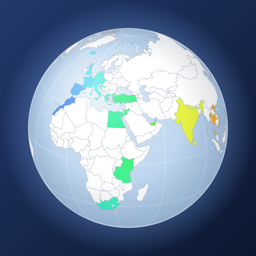

FootPrints
サポート
写真の位置情報から、訪れた国と地域を地図に塗るアプリ
お問い合わせ
不具合のご報告やご要望は、次のメールアドレスまでお送りください。
お使いの機種と iOS のバージョンを書き添えていただけると、調査がスムーズです。
よくある質問
国が塗られません。
写真に位置情報が付いている必要があります。カメラの設定で位置情報がオフだった写真や、位置情報を削除した写真は判定できません。また「設定 > プライバシーとセキュリティ > 写真」で FootPrints へのアクセスが許可されているかご確認ください。
行ったのに写真がない国を登録したい。
地図でその国をタップし、詳細画面の「行ったことがある」をオンにしてください。地図に斜線で表示されます。
次に行きたい国に印を付けたい。
まだ行っていない国をタップし、詳細画面の「行きたい」をオンにしてください。地図に点線の枠で表示され、統計の画面にも一覧が出ます。都市は、統計の「行きたい場所」の「都市を追加」から名前で探して入れられます。地図に星の印で出て、星の長押しで外せます。
世界遺産や日本の名城を地図に出したい。
地図の右上の、重なった四角のボタン（地図に重ねるもの）から「世界遺産」「日本の名城」（日本100名城・続日本100名城の200城）を選んでください。写真を撮った場所の近く（世界遺産は 2km、名城は 1km 以内。広い世界遺産はもう少し広く）にあれば訪れたことになり、世界遺産は金色、名城は紫の印になります。統計の画面に数と一覧、実績があり、国の詳細・旅の詳細・1年のまとめにも出ます。一覧では、名前や国（名城は都道府県）で探したり、右上のボタンで国・都道府県ごとに絞り込んだりできます。訪れたものを押すと、そこで撮った写真を見られます。
首都の名前を地図に出したい。
地図の右上の、重なった四角のボタン（地図に重ねるもの）から「首都」を選ぶと、各国の首都の名前を出します。首都が2つ以上ある国は、すべての首都を出します。
写真の無い世界遺産を訪れたことにしたい。判定を直したい。
地図の印、または統計の一覧で長押しすると、「訪れたことにする」「行きたい場所に入れる」を選べます。写真で訪れたことになったものは「訪れていないことにする」で外せ、「写真から判定する」で元に戻せます。
行っていない国に写真が数えられています。
人から送られた写真などで、位置情報が実際の場所と違うことがあります。詳細画面でその写真を長押しし、「ここで撮った写真ではない」を選ぶと集計から外れます。外した写真は、詳細画面の「外した写真」から長押しで元に戻せます。
国境や海岸の近くで撮った写真が、隣の国と判定されます。
判定は端末内の地図データで行っており、境界付近ではずれることがあります。誤った写真は上の方法で外し、正しい国を「行ったことがある」で登録してください。
写真を撮った場所を地図に出したい。
地図の右上の、重なった四角のボタン（地図に重ねるもの）から「写真の場所」を選ぶと、写真を撮った場所を小さな赤い点で表示します。近い場所の写真は1つの点にまとめ、写真が多い場所ほど点が大きくなります。点を押すと、そこで撮った写真を一覧で見られます。一覧の上の「この場所の旅」から、その写真を撮った旅を開けます。地図を画像にして送るときや、友達・家族との共有には、点は出ません。
地図を衛星写真で見たい。白地図に戻したい。
地図は、最初は衛星写真で表示します。訪れた国や県の塗りを重ねたまま、街の中まで寄れます（最大 3000 倍）。地図の右上の、重なった四角のボタン（地図に重ねるもの）の「衛星写真」をオフにすると、これまでの白地図になります。平面と地球儀のどちらにも効きます。オフラインのときは、自動で白地図にします。モバイル通信のときは、衛星写真は通信量が多くなります。平面の地図は、白地図も衛星写真もメルカトル図法で、切り替えても場所と倍率は変わりません。地図を画像にして送るときは、衛星写真か白地図かを選べます（世界の地図は、現在地が真ん中になります）。
ルートの動画を作りたい。
旅の詳細の右上のフィルムのボタンから作れます。地図が線の先を追いかけながら、旅の道のりをたどる動画になります。作る前の画面で、地図を衛星写真にするか白地図にするかを選び、動画の最後に見せる範囲をピンチやドラッグで決めてください。立ち寄った県や州、市区町村の名前も出ます。「写真を入れる」をオンにすると、写真の多い地点で線を止めて、そこで撮った写真を出します。オフラインのときは、白地図の動画になります。
旅の一覧に出る市区町村の名前は？
旅で立ち寄った地点の市区町村の名前です。衛星写真がオンのときに、立ち寄った地点の位置から Apple の住所検索で調べ、端末に覚えておきます。少しずつ調べるので、すべての旅に出るまでしばらくかかります。衛星写真をオフにすると調べません。
地図を画像にして送りたい。
左下の共有ボタンから、訪れた国の数や凡例の入った地図の画像を作れます。世界全体か地域設定の国か、ライトかダークかを選べます。旅1つぶんの画像は、旅の詳細の右上の共有ボタンの「旅の画像」から作れます。ルートの線を衛星写真か白地図に重ね、写真を入れることもできます。
旅を探したい。
旅の一覧を下に引くと検索欄が出ます。旅の名前、行き先の国や県、市区町村、世界遺産や名城、メモ、年で探せます。
旅はどのようにまとめられますか?
写真を撮った日数が最も多い場所を自宅とみなし、自宅から離れた場所で撮った写真を、日付の続き具合で旅ごとにまとめます。左下のスーツケースのボタンから、旅の一覧・移動ルート・カレンダーを見られます。旅に入れたくない写真は、上の「ここで撮った写真ではない」で外せます。
実家への帰省と、そこから出かけた先が1つの旅になります。
旅の詳細の「よく帰る場所として登録」で、実家などを登録してください。登録した場所から 2km 以内で撮った写真は「帰省」の旅にまとめ、そこから出かけた先は別の旅にします。登録した場所は、歯車のボタンの「よく帰る場所」で削除できます。
家族や友達と地図を比べたい。
下のボタンの「友達・家族」で、「家族」「友達」などのグループを選び、「招待する」でメッセージやメールで招待を送れます。相手が招待のリンクを開くと、お互いの地図を重ねて、2人とも行った国や行きたい場所、訪れた世界遺産・名城を比べられます。見せるもの（国、州・県、世界遺産・名城、行きたい場所、旅の行き先と月）は、グループごとに選べます。写真やメモは共有しません。共有は、いつでもやめられます。
ビデオも地図に入りますか？
はい。写真と同じように、ビデオを撮った場所と日時から地図を塗り、旅やカレンダーにも入れます。旅や国の詳細で、ビデオをタップすると再生できます。
Siri で使えますか？
はい。「FootPrintsで訪れた国の数」「FootPrintsで今年の旅」「FootPrintsであの日の旅」と話しかけると答えます。「FootPrintsで1年のまとめを開く」「FootPrintsで旅の一覧を見せて」で、その画面を開けます。ショートカットアプリでも同じ操作を使えます。
ウィジェットを置きたい。
ホーム画面やロック画面を長押しして「編集」から「ウィジェットを追加」を選び、FootPrints を選んでください。訪れた国、今年の旅、あの日の旅、旅行中の4種類があります。「旅行中」は旅の途中だけ、旅の名前・何日目か・その日に立ち寄った市区町村を出します。内容は FootPrints を開いたときに更新されます。
招待のリンクを開いても地図が追加されない。
相手も FootPrints を入れ、iCloud にサインインしている必要があります。招待のリンクは、アプリの中のブラウザでは開けません。メッセージ以外のアプリで届いた場合は、リンクを長押しして Safari で開いてください。リンクを開いたあとで FootPrints を入れた場合は、もう一度リンクを開いてください。
旅の写真を一緒に行った人に送りたい。
旅の詳細の右上の「選択」で写真を選び、「共有」を押してください。撮影した場所の情報を外して送ることもできます。
旅を1枚にまとめて残したい。
旅の詳細の右上の本のボタン（旅のアルバム）を押すと、タイトル・日付・地図とルート・訪れた場所・メモ・写真9枚を1枚にまとめます。写真は自動で選び、下の「写真を選ぶ」で選び直せます。右上の共有のボタンから、画像か PDF で送ったり保存したりできます。
実績にはどんなものがありますか？
訪れた国の数、大陸、都道府県（地域設定の国の区分）の数のほか、1年に訪れた国の数、1回の旅で訪れた国の数、旅をした年が何年続いたか、日本の8地方の制覇（地域設定が日本のとき）などがあります。統計の画面で、達成した日とあといくつで達成かを確認できます。
旅や日付にメモを残したい。
旅の詳細でタイトルとメモを書けます。旅の詳細の日ごとの欄の鉛筆のボタン、またはカレンダーで日付を開くと、その日のメモを書けます。写真を全画面で見ているときは、下の「一言を書く」から写真1枚ごとに一言を付けられ、旅のアルバムにも載ります。タイトルを付けた旅は、一覧でタイトルの下に行き先が出ます。
拡大・縮小をもっと細かくしたい。
右下の倍率の表示を長押しして、指を上下に動かすと、画面の真ん中を中心に拡大・縮小できます。軽くタップすると全体表示に戻ります。
iPad や Mac で、地図を見ながら旅を見たい。
横幅の広い画面では、旅や国の詳細、統計が地図の右に並んで開きます。開いたまま地図の国を押すと、その国の詳細に切り替わります。
ほかの国の州や県も表示されますか?
はい。写真や「行ったことがある」で訪れた国なら、地図で寄ると州・県などの区分に切り替わります。区分の詳細から国全体の詳細へ、国の詳細から訪れた区分へ移れます。
上の切り替えや統計の「都道府県」を別の国にしたい。
左下の歯車のボタンから「区分を表示する国」を選べます。初期状態では端末の地域設定の国が使われます。
表示する言語を変えたい。
「設定 > アプリ > FootPrints > 言語」で切り替えられます。日本語、英語、ドイツ語、フランス語、スペイン語、イタリア語、韓国語、中国語（簡体字・繁体字）に対応しています。アプリの歯車のボタンから「言語」を押しても、このページが開きます。
写真の一部しかスキャンされません。
写真へのアクセスを「選択した写真のみ」にしている場合、選んだ写真だけが対象です。左下の更新ボタンを長押しすると、選ぶ写真を変更できます。
データはどこに保存されますか?
写真のスキャン結果は端末の中だけに保存されます。手動で登録した内容など一部は、ご自身の iCloud で端末間に同期されます。開発者に送られることはありません。詳しくはプライバシーポリシーをご覧ください。